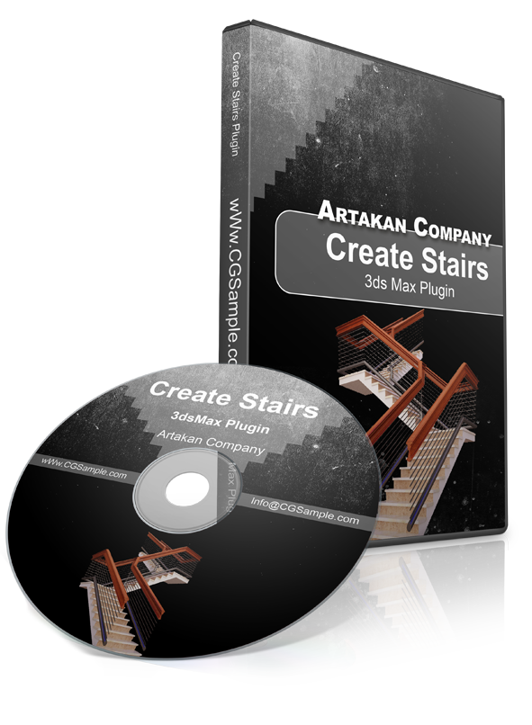

Parametric Stairs
Set rise, tread depth, staircase width and stair type using adjustable parameters for creating different architectural staircase configurations.
Artakan Create Stairs is a parametric staircase plugin for Autodesk 3ds Max. Create stairs, railings and handrails by adjusting the main dimensions and parameters of your staircase instead of building every element manually.

The plugin is designed to simplify repetitive staircase modeling tasks inside Autodesk 3ds Max, while keeping the generated elements editable through the available parameters.
Set rise, tread depth, staircase width and stair type using adjustable parameters for creating different architectural staircase configurations.
Generate railing and handrail elements along the staircase path instead of modeling each component manually.
Use separate material controls for staircase treads, railing and handrail elements. The workflow is designed for common architectural rendering pipelines.
Adjust available staircase parameters during the modeling process without rebuilding the complete staircase manually.
Designed for architects, interior designers and 3D artists who regularly create stairs and railing systems in Autodesk 3ds Max.
Create Stairs is available in version 3.00. Contact CGSample before purchase to confirm compatibility with your installed 3ds Max version.
A technical representation of staircase dimensions, including tread run, rise and railing angle.
Watch tutorials showing how Create Stairs can be used to create architectural staircases inside Autodesk 3ds Max.
The online store is temporarily unavailable. For purchase, pricing or 3ds Max version compatibility, contact CGSample by email.
Common questions about the Create Stairs plugin for Autodesk 3ds Max.
Artakan Create Stairs is a parametric staircase plugin for Autodesk 3ds Max that helps users create stairs, railings and handrails using adjustable parameters.
The plugin is designed to generate staircase elements, railings and handrails. Available parameters include staircase dimensions and other controls used to create different architectural stair configurations.
Create Stairs is currently listed as version 3.00. Because compatibility can depend on the specific 3ds Max release, contact CGSample before purchasing to confirm compatibility with your installed version.
The plugin is designed for architects, interior designers, architectural visualization artists and 3D artists who create staircases inside Autodesk 3ds Max.
The online store is temporarily unavailable. Contact CGSample at info@cgsample.ir for current pricing, purchase instructions and version compatibility.